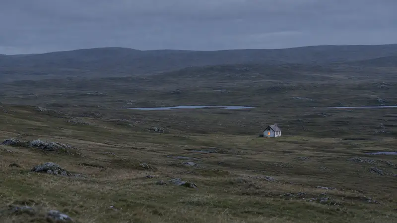
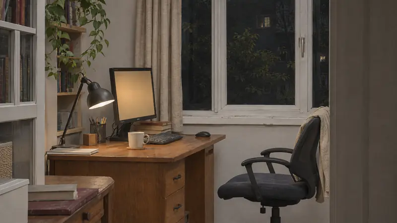

Three people went into a new cut on 16 Psyche. Their cameras are still on.
At 03:12, you're the only person awake at Home on Earth. Kirra's survey party is drilling into an asteroid thought to be the bare core of a broken planet. Watch the pictures arrive. Read their short wireless reports. When the reports stop, choose how far to send the last robot.
Take the watch
Everyone else is asleep. Kirra's survey is still running.
Nine places keep working through the night: farms, foundries, a station in orbit, a mine on an asteroid. Robots do nearly all of it. About 2,400 people live among them, and tonight one of them is you, on watch.
Kirra has three people, 40,000 machines and 212 drills.

6.2 million large machines; nearly all the others are grain-sized swarms.Kirra / surveys sent fleet-wide · Kuiper / rock samples received · Alpha Centauri / seed ships in transit
When the reports stop, choose how far to send the last robot.
Take the watch